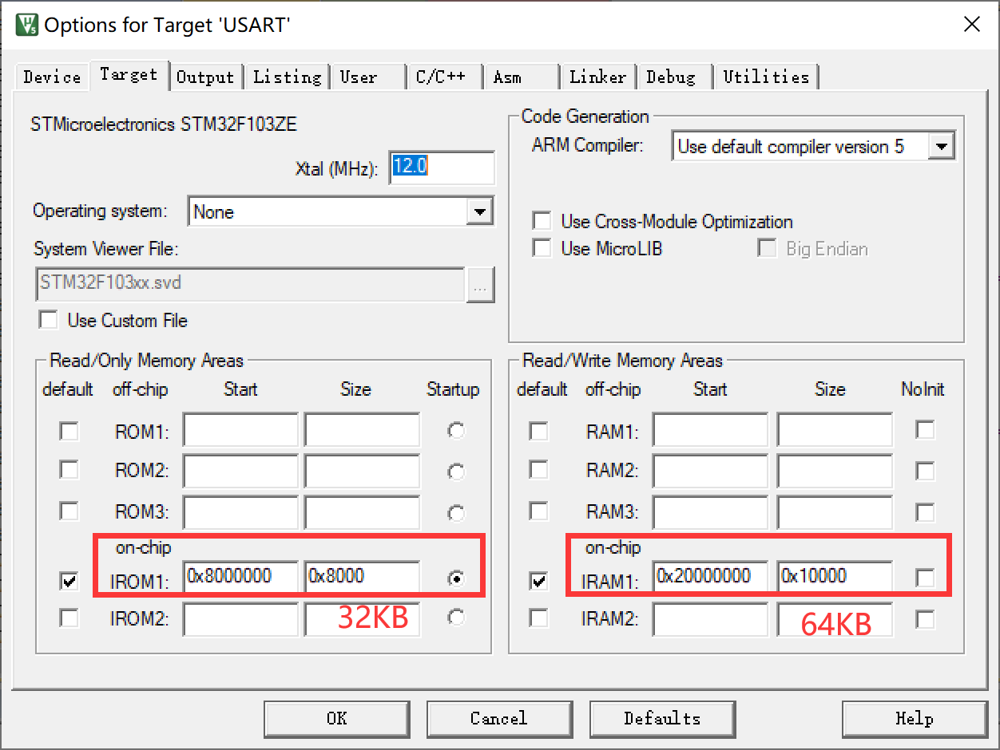

Bootloader_v2.0
使用场景
我们常用的项目开发流程中很少会使用到BootLoader，但是在需要持续更新迭代的项目中，使用BootLoader能够极大地提高用户的使用体验。
比如我曾经购买的示波器OSC509，PCB上有烧录通孔，但是对于普通用户而言，想要更新程序就要找烧录排针，还是十分麻烦的。所以这台示波器采用sd卡更新程序，只要在sd卡中放入新版本的程序，在接下来的启动中就会自动将该程序（bin文件）下载到单片机的flash中，同时删除sd卡中的bin文件。
当时只知道Linux中有uBoot，现在知道stm32也可以通过这样的方式启动。
原理
启动方式
单片机具有Boot0和Boot1脚，在正点原子或者野火的学习板上我们可以通过跳线帽选择启动方式：
 三种启动方式
三种启动方式
1、第一种方式(boot0 = 0)：Flash memory启动方式
启动地址：0x08000000 是STM32内置的Flash，一般我们使用JTAG或者SWD模式下载程序时，就是下载到这个里面，重启后也直接从这启动程序。基本上都是采用这种模式。
2、第二种方式(boot0 = 1；boot1 = 0)：System memory启动方式 启动地址：0x1FFF0000从系统存储器启动，这种模式启动的程序功能是由厂家设置的。一般来说，这种启动方式用的比较少。系统存储器是芯片内部一块特定的区域，STM32在出厂时，由ST在这个区域内部预置了一段BootLoader， 也就是我们常说的ISP程序， 这是一块ROM，出厂后无法修改。一般来说，我们选用这种启动模式时，是为了从串口下载程序，因为在厂家提供的BootLoader 中，提供了串口下载程序的固件，可以通过这个BootLoader将程序下载到系统的Flash中。但是这个下载方式需要以下步骤：
将BOOT0设置为1，BOOT1设置为0，然后按下复位键，这样才能从系统存储器启动BootLoader。
最后在BootLoader的帮助下，通过串口下载程序到Flash中
程序下载完成后，又有需要将BOOT0设置为GND，手动复位，按照第1种启动方式的流程启动。
3、第三种方式(boot0 = 1;boot1 = 1)：SRAM启动方式。 启动地址：0x20000000 内置SRAM，既然是SRAM，自然也就没有程序存储的能力了，这个模式一般用于程序调试。假如我只修改了代码中一个小小的 地方，然后就需要重新擦除整个Flash，比较的费时，可以考虑从这个模式启动代码（也就是STM32的内存中），用于快速的程序调试，等程序调试完成后，在将程序下载到SRAM中。
从flash启动
无论如何单片机都是从0x0000_0000的位置开始运行的，其中最重要的就是PC和SP，PC指的是当前运行的位置，SP指向当前使用RAM的堆栈栈顶。
我们知道在keil中的魔法棒工具栏中可以选择ROM（即flash）和RAM的起始地址和大小，

ROM和RAM的地址选择
当单片机刚上电的时候，会根据Boot0和Boot1的状态选择启动方式，比如选择启动方式1（从flash启动），就会将图中0x0800_0000处的flash内容复制到0x0000_0000处开始运行。
下面的表格是刚上电时单片机ROM中的状态，此时已将flash内容映射到0x0000_0000：
| 指针 | 地址 | 功能 |
|:——:|:——-:|:——:|
| | 0x0000_0000 | 函数__initial_sp |
| PC–>| 0x0000_0004 | 函数Reset Handler |
| | 0x0000_0008 | 函数NMI_Handler |
| … | … | … |
启动流程：
（1）初始化堆栈指针SP=_initial_sp。
（2）初始化PC指针，令其=Reset_Handler。
（3）初始化中断向量表。
（4）配置系统时钟。
（5）调用C库函数_main初始化用户堆栈，从而最终调用main函数。
; Reset handler
Reset_Handler PROC
EXPORT Reset_Handler [WEAK]
IMPORT __main
IMPORT SystemInit
LDR R0, =SystemInit
BLX R0
LDR R0, =__main
BX R0
ENDP
已知以上内容，那么我们如何更改程序每次启动所使用的应用程序呢？
我们在单片机中的flash中烧录两个程序，而程序的关键就在于ROM和RAM，ROM保存的是程序（函数的集合）和一些确定的（静态）变量，RAM保存一些动态的变量，那么我们就能描述出一个程序是怎么样的了。
所以，IAP的关键在于两个程序中的切换，在单片机启动的时候根据BootLoader的内容设置BootLoader程序的SP -> BL堆栈栈顶， PC -> BL的reset_handler，一直运行下去，直到切换到应用程序。
上述BL的SP和PC设置是单片机在启动文件startup_stm32f103xe.s中设置的，但由于BL和App程序很难做到在flash中完全连接在一起，这俩程序是独立的，也就是分开来进行烧录的，互不影响，所以切换到App的时候需要我们手动设置PC和SP的指向，接着完全交由单片机运行。
在1.0版本实现了APP跳转的基础上，2.0版本能够支持使用SD卡进行更新，仅需要将需要更新的App.bin文件放置在SD卡的0:Update目录下，在开发板上电后按下KEY0则可进行App更新，倘若不按下KEY0，则会跳转到上一次断电前运行版本。
首先我们必须对Fatfs系统进行瘦身，往往我们会使用cc936.c这个文件来使用中文字库，但是该文件占用空间Flash空间极大，在不考虑将其放入外部flash的情况时，使用Fatfs原始编码是有利于节约空间的，否则Bootloader过大总让人感觉有些汗流浃背。
在.map文件中我们可以查看到flash中二进制文件（.o）的大小。在移除这个cc936.c文件后，我们还需要修改ffconf.h中的选择。一共两步，不使用长文件名与exfat。
接着继续给文件瘦身，REMOVE掉不必要的文件，只留下必要的驱动以及HAL库文件。
代码示例
语言：C
编译器：Keil5
stm32库：HAL-1.5.x
串口：UART1
#include "sys.h"
#include "delay.h"
#include "usart.h"
#include "led.h"
#include "key.h"
#include "sram.h"
#include "malloc.h"
#include "sdio_sdcard.h"
#include "ff.h"
#include "exfuns.h"
/************************************************
BootLoader_V_2_0_0
************************************************/
//一定要在deinit的时候释放所有的外设
//有一个问题，如果把APP——BUFFER用mymalloc在SRAMEX会导致，程序正常，但最后即使free了仍然无法进入App
//定义App放置的位置
#define App_Address 0x08008000
/* Flash的sector基地址 */
#define ADDR_FLASH_SECTOR_0 ((uint32_t)0x08000000) /* Base @ of Sector 0, 16 Kbytes */
#define ADDR_FLASH_SECTOR_1 ((uint32_t)0x08004000) /* Base @ of Sector 1, 16 Kbytes */
#define ADDR_FLASH_SECTOR_2 ((uint32_t)0x08008000) /* Base @ of Sector 2, 16 Kbytes */
#define ADDR_FLASH_SECTOR_3 ((uint32_t)0x0800C000) /* Base @ of Sector 3, 16 Kbytes */
#define ADDR_FLASH_SECTOR_4 ((uint32_t)0x08010000) /* Base @ of Sector 4, 64 Kbytes */
#define ADDR_FLASH_SECTOR_5 ((uint32_t)0x08020000) /* Base @ of Sector 5, 128 Kbytes */
#define ADDR_FLASH_SECTOR_6 ((uint32_t)0x08040000) /* Base @ of Sector 6, 128 Kbytes */
#define ADDR_FLASH_SECTOR_7 ((uint32_t)0x08060000) /* Base @ of Sector 7, 128 Kbytes */
#define ADDR_FLASH_SECTOR_8 ((uint32_t)0x08080000) /* Base @ of Sector 8, 128 Kbytes */
#define ADDR_FLASH_SECTOR_9 ((uint32_t)0x080A0000) /* Base @ of Sector 9, 128 Kbytes */
#define ADDR_FLASH_SECTOR_10 ((uint32_t)0x080C0000) /* Base @ of Sector 10, 128 Kbytes */
#define ADDR_FLASH_SECTOR_11 ((uint32_t)0x080E0000) /* Base @ of Sector 11, 128 Kbytes */
//定义函数指针，注意typedef的作用是提升后面变量的等级
//先有void (* pFunc)(void);
//然后typedef提高pFunc到可以作为变量名的等级
typedef void (* pFunc)(void);
//文件系统相关变量
FIL fnew;
FRESULT res_fs;
UINT fnum;
//汇编函数，调用MSR存储主堆栈指针的值（重要），App的首地址0x08008000位置存储的是RAM中的堆栈栈顶指针（即地址），将其赋值给MSP（主堆栈指针），使其指向堆栈
//根据编译器版本不同选择版本
//会有报错但并可以编译
__asm void MSR_MSP(u32 addr)
{
MSR MSP, r0 //set Main Stack value
BX r14
}
//根据地址信息获取到其在哪一个sector中
uint32_t GetSector(uint32_t Address)
{
uint32_t sector = 0;
if((Address < ADDR_FLASH_SECTOR_1) && (Address >= ADDR_FLASH_SECTOR_0))
{
sector = FLASH_SECTOR_0;
}
else if((Address < ADDR_FLASH_SECTOR_2) && (Address >= ADDR_FLASH_SECTOR_1))
{
sector = FLASH_SECTOR_1;
}
else if((Address < ADDR_FLASH_SECTOR_3) && (Address >= ADDR_FLASH_SECTOR_2))
{
sector = FLASH_SECTOR_2;
}
else if((Address < ADDR_FLASH_SECTOR_4) && (Address >= ADDR_FLASH_SECTOR_3))
{
sector = FLASH_SECTOR_3;
}
else if((Address < ADDR_FLASH_SECTOR_5) && (Address >= ADDR_FLASH_SECTOR_4))
{
sector = FLASH_SECTOR_4;
}
else if((Address < ADDR_FLASH_SECTOR_6) && (Address >= ADDR_FLASH_SECTOR_5))
{
sector = FLASH_SECTOR_5;
}
else if((Address < ADDR_FLASH_SECTOR_7) && (Address >= ADDR_FLASH_SECTOR_6))
{
sector = FLASH_SECTOR_6;
}
else if((Address < ADDR_FLASH_SECTOR_8) && (Address >= ADDR_FLASH_SECTOR_7))
{
sector = FLASH_SECTOR_7;
}
else if((Address < ADDR_FLASH_SECTOR_9) && (Address >= ADDR_FLASH_SECTOR_8))
{
sector = FLASH_SECTOR_8;
}
else if((Address < ADDR_FLASH_SECTOR_10) && (Address >= ADDR_FLASH_SECTOR_9))
{
sector = FLASH_SECTOR_9;
}
else if((Address < ADDR_FLASH_SECTOR_11) && (Address >= ADDR_FLASH_SECTOR_10))
{
sector = FLASH_SECTOR_10;
}
else/*(Address < FLASH_END_ADDR) && (Address >= ADDR_FLASH_SECTOR_11))*/
{
sector = FLASH_SECTOR_11;
}
return sector;
}
void IAP_Jump2App(uint32_t app_addr)
{
pFunc Jump2App = NULL;
//这是一个关键的检查，
//初始化栈指针就是指向栈顶地址，*app_addr可以获得栈顶的地址；
//在魔术棒菜单中看到RAM的地址范围是0x20000000--0x20030000，所以我们的app程序的堆栈栈顶地址必须在这个范围之内
if(((*(uint32_t *)(app_addr)) & 0x2FFC0000) == 0x20000000)
{
//App的地址向后移动4个字节存储的就是Reset_Handler函数（程序开始）的地址，所以对App+4这个位置解引用就可以获得函数地址
Jump2App = *(pFunc *)(app_addr + 4);
//设置当前MSP指向App的堆栈栈顶
MSR_MSP(app_addr);
//跳转到App程序的开始
Jump2App();
}
}
void sys_Init(void)
{
//系统初始化
HAL_Init(); //初始化HAL库
GD32_Clock_Init(336,8,2,7); //设置时钟,168Mhz
//delay_init的本质是初始化系统滴答时钟
delay_init(168); //初始化延时函数
uart_init(115200); //初始化USART
LED_Init(); //初始化LED
KEY_Init(); //初始化按键
SRAM_Init(); //初始化外部SRAM
my_mem_init(SRAMIN); //初始化内部内存池
my_mem_init(SRAMEX); //初始化外部内存池
while(SD_Init())
{
printf("请插入SD卡！\r\n");
LED0 = 0;
HAL_Delay(500);
LED0 = 1;
HAL_Delay(500);
}
exfuns_init(); //给fatfs相关变量申请内存
res_fs = f_mount(fs[0], "0:",1); //挂载SD卡
if(res_fs == FR_OK)
{
printf("SD同步成功！\r\n");
}
}
void sys_Deinit(void)
{
HAL_DeInit();
HAL_UART_DeInit(&UART1_Handler);
HAL_GPIO_DeInit(GPIOF,GPIO_PIN_9|GPIO_PIN_10);
HAL_GPIO_DeInit(GPIOA,GPIO_PIN_0);
HAL_GPIO_DeInit(GPIOE,GPIO_PIN_4);
// HAL_UART_DeInit(&UART1_Handler);
//三个时钟相关寄存器清零
SysTick->CTRL = 0;
SysTick->LOAD = 0;
SysTick->VAL = 0;
}
int main(void)
{
uint32_t i = 0;
uint32_t start_sector = 0x00;
uint32_t end_sector = 0x00;
//在外部SRAM开辟存放更新程序BIN文件的空间
uint8_t *App_BIN_Buffer;
uint32_t App_BIN_Size = 0;
//初始化系统外设
sys_Init();
//打印Logo
printf("\r\n======================================================================");
printf("\r\n= (C) COPYRIGHT 2024 www.hawkjgogogo.com =");
printf("\r\n= =");
printf("\r\n= In-Application Programming Application (Version 1.0) =");
printf("\r\n= =");
printf("\r\n= By HawkJ =");
printf("\r\n======================================================================");
printf("\r\n======================================================================");
printf("\r\n===============按下KEY0进入烧写SD卡中的App============================");
printf("\r\n\r\n");
for(i = 0;i < 10;i++)
{
if(KEY0_PRES == KEY_Scan(0))
{
//从SD卡中的UPDATE文件夹读取BIN文件
res_fs = f_open(&fnew, "0:Update/A.bin",FA_READ);
if(res_fs != FR_OK)
{
printf("打开App文件失败，失败代码：%d\r\n", res_fs);
}
App_BIN_Size = f_size(&fnew);
printf("文件大小为：%d\r\n", App_BIN_Size);
App_BIN_Buffer = (uint8_t *)mymalloc(SRAMIN, App_BIN_Size);
res_fs = f_read(&fnew, App_BIN_Buffer, App_BIN_Size, &fnum);
if(res_fs != FR_OK)
{
printf("读取Bin文件失败，失败代码：%d\r\n", res_fs);
}
else
{
printf("读取Bin文件成功，读取%d个字节\r\n", fnum);
}
f_close(&fnew);
//解锁flash
HAL_FLASH_Unlock();
//擦除flash的程序部分
start_sector = GetSector(App_Address);
end_sector = FLASH_SECTOR_9;
//擦除flash
for(i = start_sector;i < end_sector;i ++)
{
FLASH_Erase_Sector(i, VOLTAGE_RANGE_3);
}
printf("App区Flash已擦除完毕！\r\n");
HAL_FLASH_Lock();
//写入数据
HAL_FLASH_Unlock();
//写的速度可能会比较慢，但是如果按照四个字节的方式写入的话，会导致0X12345678 变成 78 56 34 12 78 56 34 12 78 56 34 12
for( i = 0 ; i < App_BIN_Size ; i ++ )
{
HAL_FLASH_Program(FLASH_TYPEPROGRAM_BYTE, App_Address + i , (unsigned int)App_BIN_Buffer[i]);
}
printf("程序写入成功！\r\n");
HAL_FLASH_Lock();
myfree(SRAMIN, App_BIN_Buffer);
break;
}
HAL_Delay(500);
}
printf("关闭外设，准备跳转！\r\n");
//关闭外设
sys_Deinit();
//进入BL的Jump2App函数
IAP_Jump2App(App_Address);
//永远不会进入到这里
while(1);
}
注意事项
如果把APP_BUFFER用mymalloc在SRAMEX会导致，程序正常，但最后即使free了仍然无法进入App。